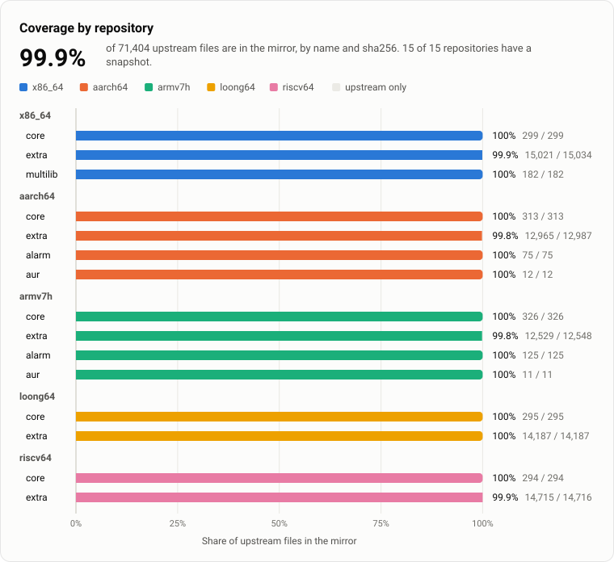
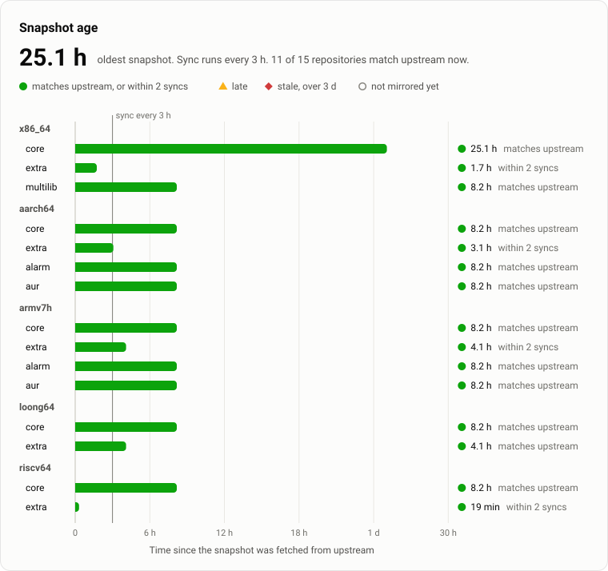
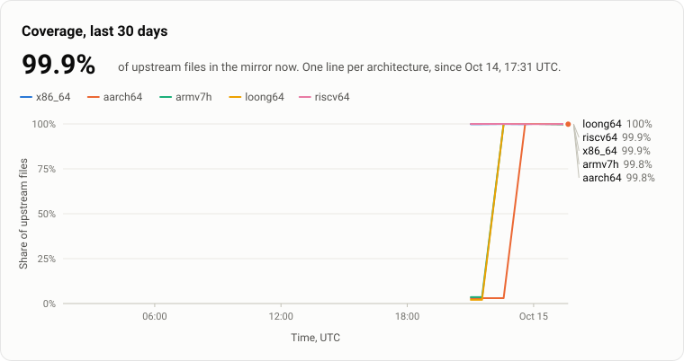
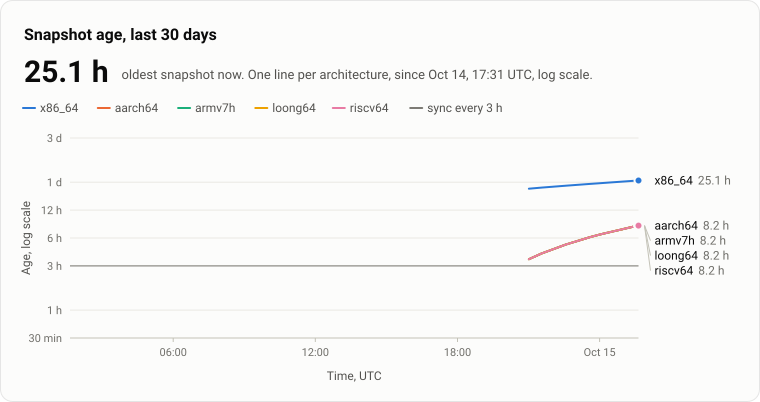
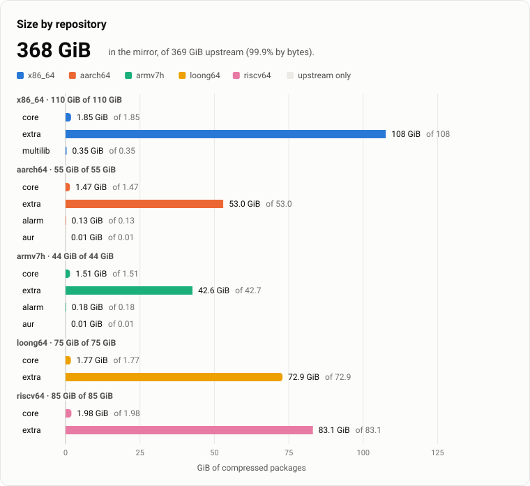
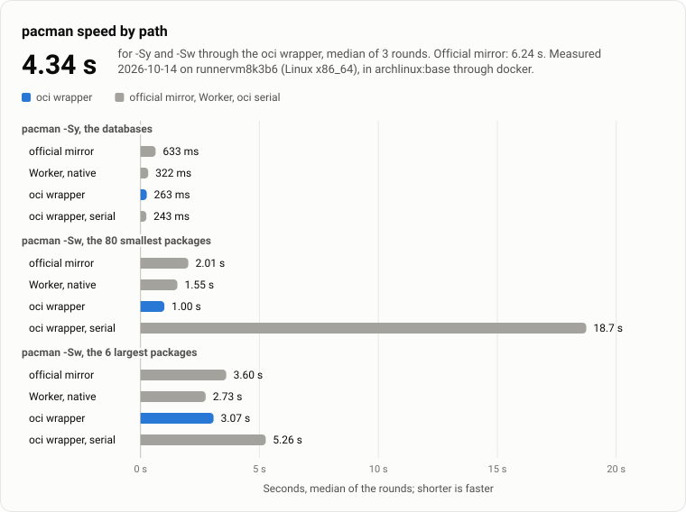

mirror-archlinux status
Arch Linux repositories for 5 architectures, mirrored to GitHub Container Registry and served to pacman.
99.9%
of upstream files are in the mirror, counted by file name and sha256 over 15 repositories.
Use the mirror
Through the Worker, no client
pacman downloads as usual. The Worker answers each request with a redirect to GHCR.
[core]
Server = https://ghcr.mirror.archlinux.pkgforge.dev/$arch/$repo
Include = /etc/pacman.d/mirrorlistThrough the oci wrapper
pacman reads the registry with client/pacman-oci as its XferCommand.
[options]
XferCommand = /usr/local/bin/pacman-oci %o %u
[core]
Server = oci://ghcr.io/pkgforge-dev/mirror-archlinux/$arch/$repo
Include = /etc/pacman.d/mirrorlistCharts


Table
| repository | in the mirror | upstream | share | missing |
|---|---|---|---|---|
| x86_64-core | 299 | 299 | 100% | 0 |
| x86_64-extra | 15,021 | 15,034 | 99.9% | 13 |
| x86_64-multilib | 182 | 182 | 100% | 0 |
| aarch64-core | 313 | 313 | 100% | 0 |
| aarch64-extra | 12,965 | 12,987 | 99.8% | 22 |
| aarch64-alarm | 75 | 75 | 100% | 0 |
| aarch64-aur | 12 | 12 | 100% | 0 |
| armv7h-core | 326 | 326 | 100% | 0 |
| armv7h-extra | 12,529 | 12,548 | 99.8% | 19 |
| armv7h-alarm | 125 | 125 | 100% | 0 |
| armv7h-aur | 11 | 11 | 100% | 0 |
| loong64-core | 295 | 295 | 100% | 0 |
| loong64-extra | 14,187 | 14,187 | 100% | 0 |
| riscv64-core | 294 | 294 | 100% | 0 |
| riscv64-extra | 14,715 | 14,716 | 99.9% | 1 |


Table
| repository | state | fetched | synced | age | lag |
|---|---|---|---|---|---|
| x86_64-core | matches upstream | 25.1 h | 0 min | ||
| x86_64-extra | within 2 syncs | 1.7 h | 1.3 h | ||
| x86_64-multilib | matches upstream | 8.2 h | 0 min | ||
| aarch64-core | matches upstream | 8.2 h | 0 min | ||
| aarch64-extra | within 2 syncs | 3.1 h | 5.3 h | ||
| aarch64-alarm | matches upstream | 8.2 h | 0 min | ||
| aarch64-aur | matches upstream | 8.2 h | 0 min | ||
| armv7h-core | matches upstream | 8.2 h | 0 min | ||
| armv7h-extra | within 2 syncs | 4.1 h | 4.8 h | ||
| armv7h-alarm | matches upstream | 8.2 h | 0 min | ||
| armv7h-aur | matches upstream | 8.2 h | 0 min | ||
| loong64-core | matches upstream | 8.2 h | 0 min | ||
| loong64-extra | matches upstream | 4.1 h | 0 min | ||
| riscv64-core | matches upstream | 8.2 h | 0 min | ||
| riscv64-extra | within 2 syncs | 19 min | 0 min |


Table
| architecture | first point | coverage then | coverage now | largest age | points |
|---|---|---|---|---|---|
| x86_64 | 1.9% | 99.9% | 25.1 h | 9 | |
| aarch64 | 0% | 99.8% | 8.2 h | 9 | |
| armv7h | 0% | 99.8% | 8.2 h | 9 | |
| loong64 | 0% | 100% | 8.2 h | 9 | |
| riscv64 | 0% | 99.9% | 8.2 h | 9 |


Table
| architecture | first point | coverage then | coverage now | largest age | points |
|---|---|---|---|---|---|
| x86_64 | 1.9% | 99.9% | 25.1 h | 9 | |
| aarch64 | 0% | 99.8% | 8.2 h | 9 | |
| armv7h | 0% | 99.8% | 8.2 h | 9 | |
| loong64 | 0% | 100% | 8.2 h | 9 | |
| riscv64 | 0% | 99.9% | 8.2 h | 9 |


Table
| repository | GiB in the mirror | GiB upstream | share |
|---|---|---|---|
| x86_64-core | 1.85 | 1.85 | 100% |
| x86_64-extra | 108 | 108 | 99.9% |
| x86_64-multilib | 0.35 | 0.35 | 100% |
| aarch64-core | 1.47 | 1.47 | 100% |
| aarch64-extra | 53.0 | 53.0 | 99.9% |
| aarch64-alarm | 0.13 | 0.13 | 100% |
| aarch64-aur | 0.01 | 0.01 | 100% |
| armv7h-core | 1.51 | 1.51 | 100% |
| armv7h-extra | 42.6 | 42.7 | 99.9% |
| armv7h-alarm | 0.18 | 0.18 | 100% |
| armv7h-aur | 0.01 | 0.01 | 100% |
| loong64-core | 1.77 | 1.77 | 100% |
| loong64-extra | 72.9 | 72.9 | 100% |
| riscv64-core | 1.98 | 1.98 | 100% |
| riscv64-extra | 83.1 | 83.1 | 99.9% |


Table
| operation | path | median | rounds | files | MiB |
|---|---|---|---|---|---|
| sy | official mirror | 633 ms | 633 ms, 634 ms, 371 ms | 1 | 0.1 |
| sy | Worker, native | 322 ms | 420 ms, 322 ms, 259 ms | 1 | 0.1 |
| sy | oci wrapper | 263 ms | 258 ms, 263 ms, 280 ms | 1 | 0.1 |
| sy | oci wrapper, serial | 243 ms | 240 ms, 246 ms, 243 ms | 1 | 0.1 |
| sw-small | official mirror | 2.01 s | 2.03 s, 1.92 s, 2.01 s | 80 | 0.6 |
| sw-small | Worker, native | 1.55 s | 2.90 s, 1.55 s, 1.45 s | 80 | 0.6 |
| sw-small | oci wrapper | 1.00 s | 1.00 s, 971 ms, 1.07 s | 80 | 0.6 |
| sw-small | oci wrapper, serial | 18.7 s | 18.1 s, 18.7 s, 18.9 s | 80 | 0.6 |
| sw-large | official mirror | 3.60 s | 3.59 s, 3.60 s, 3.61 s | 6 | 514.9 |
| sw-large | Worker, native | 2.73 s | 3.78 s, 2.73 s, 2.61 s | 6 | 514.9 |
| sw-large | oci wrapper | 3.07 s | 3.26 s, 3.07 s, 3.01 s | 6 | 514.9 |
| sw-large | oci wrapper, serial | 5.26 s | 4.79 s, 9.43 s, 5.26 s | 6 | 514.9 |
Size by architecture
Mirror counts the files that the database of each latest snapshot names. A repository with no snapshot holds 0. Upstream counts the files of upstream's database in this run. The size chart counts only the upstream files that the mirror holds.
| repository | mirror GiB | mirror files | upstream GiB | upstream files |
|---|---|---|---|---|
| x86_64 | 110 | 15,515 | 110 | 15,515 |
| core | 1.85 | 299 | 1.85 | 299 |
| extra | 108 | 15,034 | 108 | 15,034 |
| multilib | 0.35 | 182 | 0.35 | 182 |
| aarch64 | 54.6 | 13,387 | 54.6 | 13,387 |
| core | 1.47 | 313 | 1.47 | 313 |
| extra | 53.0 | 12,987 | 53.0 | 12,987 |
| alarm | 0.13 | 75 | 0.13 | 75 |
| aur | 0.01 | 12 | 0.01 | 12 |
| armv7h | 44.4 | 13,010 | 44.4 | 13,010 |
| core | 1.51 | 326 | 1.51 | 326 |
| extra | 42.7 | 12,548 | 42.7 | 12,548 |
| alarm | 0.18 | 125 | 0.18 | 125 |
| aur | 0.01 | 11 | 0.01 | 11 |
| loong64 | 74.7 | 14,482 | 74.7 | 14,482 |
| core | 1.77 | 295 | 1.77 | 295 |
| extra | 72.9 | 14,187 | 72.9 | 14,187 |
| riscv64 | 85.1 | 15,010 | 85.1 | 15,010 |
| core | 1.98 | 294 | 1.98 | 294 |
| extra | 83.1 | 14,716 | 83.1 | 14,716 |
| all architectures | 369 | 71,404 | 369 | 71,404 |
Repositories
| repository | state | coverage | files | upstream | missing | GiB | age | synced | lag | fetched | upstream server | Worker | badge |
|---|---|---|---|---|---|---|---|---|---|---|---|---|---|
x86_64-core | ok | 100% | 299 | 299 | 0 | 1.85 | 25.1 h | 1 d ago | 0 min | https://geo.mirror.pkgbuild.com/core/os/x86_64 | db 302, package 302 | ||
x86_64-extra | partial | 99.9% | 15,021 | 15,034 | 13c2hs-0.28.8-407-x86_64.pkg.tar.zst, git-annex-10.20261006-17-x86_64.pkg.tar.zst, haskell-shelly-1.12.1-1-x86_64.pkg.tar.zst, haskell-text-show-3.11.3-1-x86_64.pkg.tar.zst, haskell-yesod-1.6.2.3-65-x86_64.pkg.tar.zst, haskell-yesod-auth-1.6.12.0-10-x86_64.pkg.tar.zst, haskell-yesod-form-1.7.11-1-x86_64.pkg.tar.zst, haskell-yesod-static-1.6.1.3-48-x86_64.pkg.tar.zst, haskell-yesod-test-1.7.0.3-7-x86_64.pkg.tar.zst, hledger-web-1.52.4-48-x86_64.pkg.tar.zst, ihaskell-0.13.0.0-105-x86_64.pkg.tar.zst, mate-screensaver-1.28.1-1-x86_64.pkg.tar.zst, tamarin-prover-1.12.0-152-x86_64.pkg.tar.zst | 108 | 1.7 h | 1 h ago | 1.3 h | https://geo.mirror.pkgbuild.com/extra/os/x86_64 | db 302, package 302 | ||
x86_64-multilib | ok | 100% | 182 | 182 | 0 | 0.35 | 8.2 h | 5 h ago | 0 min | https://geo.mirror.pkgbuild.com/multilib/os/x86_64 | db 302, package 302 | ||
aarch64-core | ok | 100% | 313 | 313 | 0 | 1.47 | 8.2 h | 8 h ago | 0 min | https://fl.us.mirror.archlinuxarm.org/aarch64/core | db 302, package 302 | ||
aarch64-extra | partial | 99.8% | 12,965 | 12,987 | 22bubblewrap-0.13.1-1-aarch64.pkg.tar.xz, curl-rustls-8.23.0-1-aarch64.pkg.tar.xz, dotconf-1.4.1-2-aarch64.pkg.tar.xz, fcrackzip-1.0-7-aarch64.pkg.tar.xz, librustls-0.15.5-1-aarch64.pkg.tar.xz, mate-media-1.28.1-4-aarch64.pkg.tar.xz, mate-menus-1.28.1-3-aarch64.pkg.tar.xz, mozo-1.28.0-6-any.pkg.tar.xz, msr-tools-1.3-6-aarch64.pkg.tar.xz, nsd-4.15.3-1-aarch64.pkg.tar.xz, python-cuda-13.4.4-1-aarch64.pkg.tar.xz, python-cuda-bindings-13.4.4-1-aarch64.pkg.tar.xz, python-cypari2-2.2.6-1-aarch64.pkg.tar.xz, python-playwright-1.64.0-1-any.pkg.tar.xz, python-plette-2.3.0-1-any.pkg.tar.xz, python-wrapt-2.5.1-1-aarch64.pkg.tar.xz, qt6-base-6.12.0-3-aarch64.pkg.tar.xz, qt6-xcb-private-headers-6.12.0-3-aarch64.pkg.tar.xz, rspamd-4.2.2-1-aarch64.pkg.tar.xz, sc-controller-1.0.7-1-aarch64.pkg.tar.xz, and 2 more | 53.0 | 3.1 h | 2 h ago | 5.3 h | https://fl.us.mirror.archlinuxarm.org/aarch64/extra | db 302, package 302 | ||
aarch64-alarm | ok | 100% | 75 | 75 | 0 | 0.13 | 8.2 h | 8 h ago | 0 min | https://fl.us.mirror.archlinuxarm.org/aarch64/alarm | db 302, package 302 | ||
aarch64-aur | ok | 100% | 12 | 12 | 0 | 0.01 | 8.2 h | 8 h ago | 0 min | https://fl.us.mirror.archlinuxarm.org/aarch64/aur | db 302, package 302 | ||
armv7h-core | ok | 100% | 326 | 326 | 0 | 1.51 | 8.2 h | 8 h ago | 0 min | https://fl.us.mirror.archlinuxarm.org/armv7h/core | db 302, package 302 | ||
armv7h-extra | partial | 99.8% | 12,529 | 12,548 | 19bubblewrap-0.13.1-1-armv7h.pkg.tar.xz, curl-rustls-8.23.0-1-armv7h.pkg.tar.xz, dotconf-1.4.1-2-armv7h.pkg.tar.xz, fcrackzip-1.0-7-armv7h.pkg.tar.xz, librustls-0.15.5-1-armv7h.pkg.tar.xz, mate-media-1.28.1-4-armv7h.pkg.tar.xz, mate-menus-1.28.1-3-armv7h.pkg.tar.xz, mozo-1.28.0-6-any.pkg.tar.xz, msr-tools-1.3-6-armv7h.pkg.tar.xz, nsd-4.15.3-1-armv7h.pkg.tar.xz, python-cypari2-2.2.6-1-armv7h.pkg.tar.xz, python-plette-2.3.0-1-any.pkg.tar.xz, python-wrapt-2.5.1-1-armv7h.pkg.tar.xz, qt6-base-6.12.0-3-armv7h.pkg.tar.xz, qt6-xcb-private-headers-6.12.0-3-armv7h.pkg.tar.xz, rspamd-4.2.2-1-armv7h.pkg.tar.xz, sc-controller-1.0.7-1-armv7h.pkg.tar.xz, tomcat10-10.1.61-1-any.pkg.tar.xz, tomcat9-9.0.123-1-any.pkg.tar.xz | 42.7 | 4.1 h | 3 h ago | 4.8 h | https://fl.us.mirror.archlinuxarm.org/armv7h/extra | db 302, package 302 | ||
armv7h-alarm | ok | 100% | 125 | 125 | 0 | 0.18 | 8.2 h | 8 h ago | 0 min | https://fl.us.mirror.archlinuxarm.org/armv7h/alarm | db 302, package 302 | ||
armv7h-aur | ok | 100% | 11 | 11 | 0 | 0.01 | 8.2 h | 8 h ago | 0 min | https://fl.us.mirror.archlinuxarm.org/armv7h/aur | db 302, package 302 | ||
loong64-core | ok | 100% | 295 | 295 | 0 | 1.77 | 8.2 h | 8 h ago | 0 min | https://loongarchlinux.lcpu.dev/loongarch/archlinux/core/os/loong64 | db 302, package 302 | ||
loong64-extra | ok | 100% | 14,187 | 14,187 | 0 | 72.9 | 4.1 h | 3 h ago | 0 min | https://loongarchlinux.lcpu.dev/loongarch/archlinux/extra/os/loong64 | db 302, package 302 | ||
riscv64-core | ok | 100% | 294 | 294 | 0 | 1.98 | 8.2 h | 8 h ago | 0 min | https://riscv.mirror.pkgbuild.com/repo/core | db 302, package 302 | ||
riscv64-extra | partial | 99.9% | 14,715 | 14,716 | 1python-cypari2-2.2.6-1-riscv64.pkg.tar.zst | 83.1 | 19 min | 17 min ago | 0 min | https://riscv.mirror.pkgbuild.com/repo/extra | db 302, package 302 |
Worker probes
Each probe is one GET with no redirect followed. A repository with a snapshot must answer 302 to https://*.githubusercontent.com. A repository with no snapshot must answer 404. Failed probes in 2 runs in a row, over 50 minutes or more, open the worker-down issue.
| repository | probe | URL | HTTP | expected | time | redirect to | result |
|---|---|---|---|---|---|---|---|
| x86_64-core | db | https://ghcr.mirror.archlinux.pkgforge.dev/x86_64/core/core.db | 302 | 302 | 287 ms | pkg-containers.githubusercontent.com | ok |
| x86_64-core | package | https://ghcr.mirror.archlinux.pkgforge.dev/x86_64/core/acl-2.4.0-1-x86_64.pkg.tar.zst | 302 | 302 | 226 ms | pkg-containers.githubusercontent.com | ok |
| x86_64-extra | db | https://ghcr.mirror.archlinux.pkgforge.dev/x86_64/extra/extra.db | 302 | 302 | 307 ms | pkg-containers.githubusercontent.com | ok |
| x86_64-extra | package | https://ghcr.mirror.archlinux.pkgforge.dev/x86_64/extra/0ad-0.28.0-3-x86_64.pkg.tar.zst | 302 | 302 | 217 ms | pkg-containers.githubusercontent.com | ok |
| x86_64-multilib | db | https://ghcr.mirror.archlinux.pkgforge.dev/x86_64/multilib/multilib.db | 302 | 302 | 300 ms | pkg-containers.githubusercontent.com | ok |
| x86_64-multilib | package | https://ghcr.mirror.archlinux.pkgforge.dev/x86_64/multilib/cmucl-21e-1-x86_64.pkg.tar.zst | 302 | 302 | 217 ms | pkg-containers.githubusercontent.com | ok |
| aarch64-core | db | https://ghcr.mirror.archlinux.pkgforge.dev/aarch64/core/core.db | 302 | 302 | 318 ms | pkg-containers.githubusercontent.com | ok |
| aarch64-core | package | https://ghcr.mirror.archlinux.pkgforge.dev/aarch64/core/acl-2.4.0-1-aarch64.pkg.tar.xz | 302 | 302 | 343 ms | pkg-containers.githubusercontent.com | ok |
| aarch64-extra | db | https://ghcr.mirror.archlinux.pkgforge.dev/aarch64/extra/extra.db | 302 | 302 | 403 ms | pkg-containers.githubusercontent.com | ok |
| aarch64-extra | package | https://ghcr.mirror.archlinux.pkgforge.dev/aarch64/extra/389-ds-base-3.3.1-1-aarch64.pkg.tar.xz | 302 | 302 | 360 ms | pkg-containers.githubusercontent.com | ok |
| aarch64-alarm | db | https://ghcr.mirror.archlinux.pkgforge.dev/aarch64/alarm/alarm.db | 302 | 302 | 475 ms | pkg-containers.githubusercontent.com | ok |
| aarch64-alarm | package | https://ghcr.mirror.archlinux.pkgforge.dev/aarch64/alarm/aml-libs-c2-r9.296f39b-1-aarch64.pkg.tar.xz | 302 | 302 | 567 ms | pkg-containers.githubusercontent.com | ok |
| aarch64-aur | db | https://ghcr.mirror.archlinux.pkgforge.dev/aarch64/aur/aur.db | 302 | 302 | 324 ms | pkg-containers.githubusercontent.com | ok |
| aarch64-aur | package | https://ghcr.mirror.archlinux.pkgforge.dev/aarch64/aur/autojump-rs-git-0.5.1.r14.g65abf11-4-any.pkg.tar.xz | 302 | 302 | 309 ms | pkg-containers.githubusercontent.com | ok |
| armv7h-core | db | https://ghcr.mirror.archlinux.pkgforge.dev/armv7h/core/core.db | 302 | 302 | 339 ms | pkg-containers.githubusercontent.com | ok |
| armv7h-core | package | https://ghcr.mirror.archlinux.pkgforge.dev/armv7h/core/acl-2.4.0-1-armv7h.pkg.tar.xz | 302 | 302 | 308 ms | pkg-containers.githubusercontent.com | ok |
| armv7h-extra | db | https://ghcr.mirror.archlinux.pkgforge.dev/armv7h/extra/extra.db | 302 | 302 | 319 ms | pkg-containers.githubusercontent.com | ok |
| armv7h-extra | package | https://ghcr.mirror.archlinux.pkgforge.dev/armv7h/extra/389-ds-base-2.4.1-2-armv7h.pkg.tar.xz | 302 | 302 | 305 ms | pkg-containers.githubusercontent.com | ok |
| armv7h-alarm | db | https://ghcr.mirror.archlinux.pkgforge.dev/armv7h/alarm/alarm.db | 302 | 302 | 314 ms | pkg-containers.githubusercontent.com | ok |
| armv7h-alarm | package | https://ghcr.mirror.archlinux.pkgforge.dev/armv7h/alarm/aml-libs-c1-r11.820b12a-5-armv7h.pkg.tar.xz | 302 | 302 | 234 ms | pkg-containers.githubusercontent.com | ok |
| armv7h-aur | db | https://ghcr.mirror.archlinux.pkgforge.dev/armv7h/aur/aur.db | 302 | 302 | 311 ms | pkg-containers.githubusercontent.com | ok |
| armv7h-aur | package | https://ghcr.mirror.archlinux.pkgforge.dev/armv7h/aur/arm-mem-git-39.b48ea15-1-armv7h.pkg.tar.xz | 302 | 302 | 313 ms | pkg-containers.githubusercontent.com | ok |
| loong64-core | db | https://ghcr.mirror.archlinux.pkgforge.dev/loong64/core/core.db | 302 | 302 | 314 ms | pkg-containers.githubusercontent.com | ok |
| loong64-core | package | https://ghcr.mirror.archlinux.pkgforge.dev/loong64/core/acl-2.4.0-1-loong64.pkg.tar.zst | 302 | 302 | 216 ms | pkg-containers.githubusercontent.com | ok |
| loong64-extra | db | https://ghcr.mirror.archlinux.pkgforge.dev/loong64/extra/extra.db | 302 | 302 | 289 ms | pkg-containers.githubusercontent.com | ok |
| loong64-extra | package | https://ghcr.mirror.archlinux.pkgforge.dev/loong64/extra/0ad-data-0.28.0-1-any.pkg.tar.zst | 302 | 302 | 371 ms | pkg-containers.githubusercontent.com | ok |
| riscv64-core | db | https://ghcr.mirror.archlinux.pkgforge.dev/riscv64/core/core.db | 302 | 302 | 360 ms | pkg-containers.githubusercontent.com | ok |
| riscv64-core | package | https://ghcr.mirror.archlinux.pkgforge.dev/riscv64/core/acl-2.4.0-1-riscv64.pkg.tar.zst | 302 | 302 | 230 ms | pkg-containers.githubusercontent.com | ok |
| riscv64-extra | db | https://ghcr.mirror.archlinux.pkgforge.dev/riscv64/extra/extra.db | 302 | 302 | 558 ms | pkg-containers.githubusercontent.com | ok |
| riscv64-extra | package | https://ghcr.mirror.archlinux.pkgforge.dev/riscv64/extra/0ad-0.28.0-3-riscv64.pkg.tar.zst | 302 | 302 | 305 ms | pkg-containers.githubusercontent.com | ok |
Badges
The status workflow writes each badge when it measures: each hour, and after each sync. An age in a badge counts to that measurement, not to now. The synced badge is green under 6 h, yellow under 24 h, and red after. A badge is an image and runs no script, so it shows its time in UTC or as an age.
| badge | URL |
|---|---|
https://pkgforge-dev.github.io/mirror-archlinux/badges/x86_64-core.svg | |
https://pkgforge-dev.github.io/mirror-archlinux/badges/x86_64-extra.svg | |
https://pkgforge-dev.github.io/mirror-archlinux/badges/x86_64-multilib.svg | |
https://pkgforge-dev.github.io/mirror-archlinux/badges/aarch64-core.svg | |
https://pkgforge-dev.github.io/mirror-archlinux/badges/aarch64-extra.svg | |
https://pkgforge-dev.github.io/mirror-archlinux/badges/aarch64-alarm.svg | |
https://pkgforge-dev.github.io/mirror-archlinux/badges/aarch64-aur.svg | |
https://pkgforge-dev.github.io/mirror-archlinux/badges/armv7h-core.svg | |
https://pkgforge-dev.github.io/mirror-archlinux/badges/armv7h-extra.svg | |
https://pkgforge-dev.github.io/mirror-archlinux/badges/armv7h-alarm.svg | |
https://pkgforge-dev.github.io/mirror-archlinux/badges/armv7h-aur.svg | |
https://pkgforge-dev.github.io/mirror-archlinux/badges/loong64-core.svg | |
https://pkgforge-dev.github.io/mirror-archlinux/badges/loong64-extra.svg | |
https://pkgforge-dev.github.io/mirror-archlinux/badges/riscv64-core.svg | |
https://pkgforge-dev.github.io/mirror-archlinux/badges/riscv64-extra.svg | |
https://pkgforge-dev.github.io/mirror-archlinux/badges/x86_64.svg | |
https://pkgforge-dev.github.io/mirror-archlinux/badges/aarch64.svg | |
https://pkgforge-dev.github.io/mirror-archlinux/badges/armv7h.svg | |
https://pkgforge-dev.github.io/mirror-archlinux/badges/loong64.svg | |
https://pkgforge-dev.github.io/mirror-archlinux/badges/riscv64.svg | |
https://pkgforge-dev.github.io/mirror-archlinux/badges/all.svg | |
https://pkgforge-dev.github.io/mirror-archlinux/badges/synced.svg | |
https://pkgforge-dev.github.io/mirror-archlinux/badges/size.svg | |
https://pkgforge-dev.github.io/mirror-archlinux/badges/size-x86_64.svg | |
https://pkgforge-dev.github.io/mirror-archlinux/badges/size-aarch64.svg | |
https://pkgforge-dev.github.io/mirror-archlinux/badges/size-armv7h.svg | |
https://pkgforge-dev.github.io/mirror-archlinux/badges/size-loong64.svg | |
https://pkgforge-dev.github.io/mirror-archlinux/badges/size-riscv64.svg | |
https://pkgforge-dev.github.io/mirror-archlinux/badges/speed.svg |